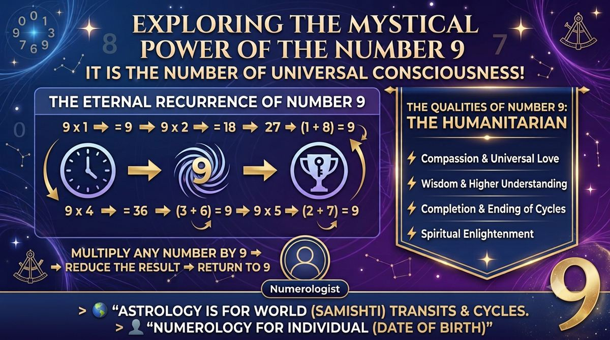

In numerology, a Life Path number is found by adding the digits of your date of birth and reducing to a single digit (example: 24-07-1990 → 32 → 5). Different traditions calculate and interpret numbers differently; this is a symbolic framework for reflection.

Multiply any number by 9 and reduce the result, and you return to 9 (9×2 = 18 → 1+8 = 9). In numerology this recurring quality is linked to universal consciousness, compassion, completion and the ending of cycles.